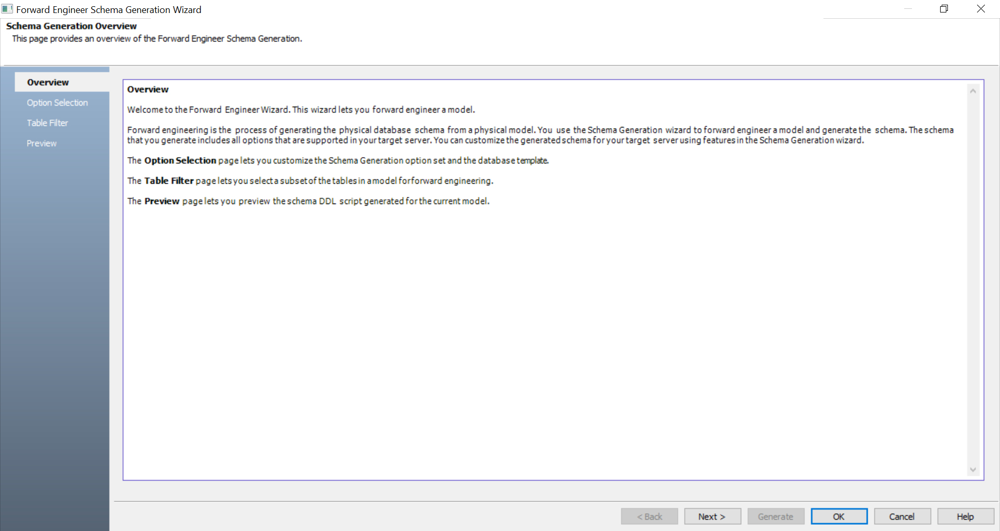
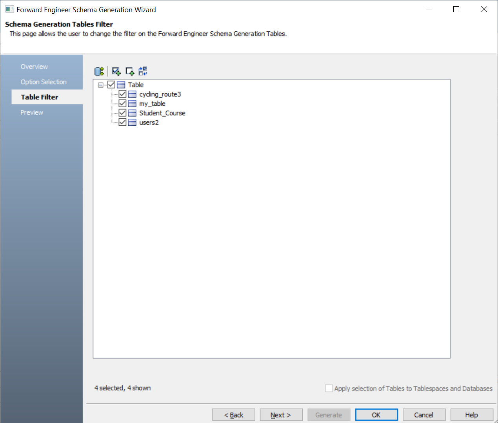
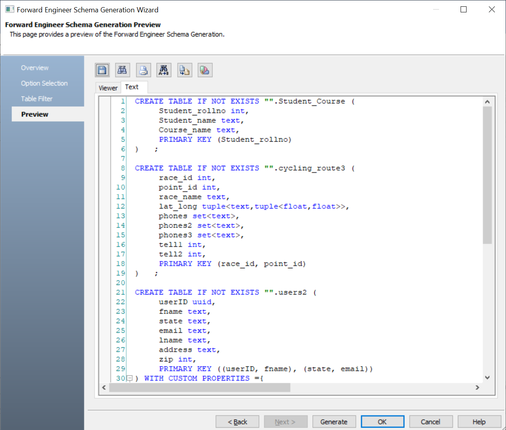
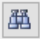
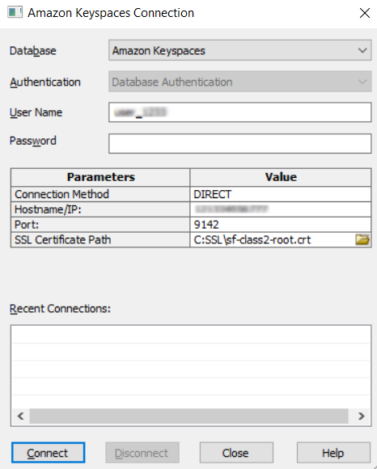
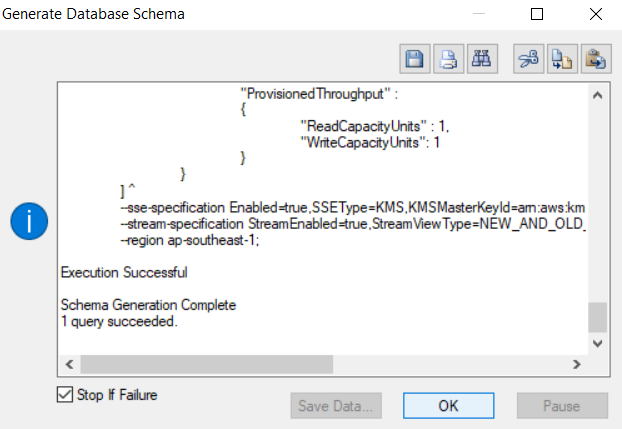

Open your Amazon Keyspaces model in erwin Data Modeler (DM).
Ensure that you are in the Physical mode.
Click Actions > Schema.
The Forward Engineer Schema Generation Wizard appears.

Click Option Selection.
The Option Selection tab displays the default option set. Clear the Drop check boxes and select other syntax check boxes as required.
Click Next.
The Table Filter tab appears. It displays a list of tables available in your model.

Select the tables that you want to forward engineer.
Click Preview to view the schema script.

Use the following options:
-
Copy (
 ): Use this option to copy the script.
): Use this option to copy the script. -
Save (
 ): Use this option to save the generated script in the CQL or SQL format.
): Use this option to save the generated script in the CQL or SQL format. -
Search (): Use this option to search through the generated schema.
-
Print (
 ): Use this option to print the generated schema.
): Use this option to print the generated schema. -
Replace (
): Use this option to find and replace in the generated schema. -
Text Options (
 ): Use this option to configure the preview text editor's look and feel, such as window, font, syntax color settings. For more information, refer to the Forward Engineering Wizard - Preview Editor topic.
): Use this option to configure the preview text editor's look and feel, such as window, font, syntax color settings. For more information, refer to the Forward Engineering Wizard - Preview Editor topic. -
Error Check (): Use this option to run an error check. Based on the results, you can correct the generated script.
The Amazon Keyspaces Connection screen appears.

Objects in your model move to the database mentioned on the Amazon Keyspaces Connection screen irrespective of the databases defined on the object editor screens. If you want to retain objects in their respective databases as defined on the object editor screens, keep the database parameter blank.
The forward engineering process starts. The script generates your physical database schema. You can access your database and verify the newly generated schema.
